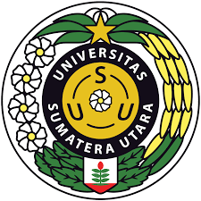

|  | |
|---|---|
| Tugas II Tugas III |
|
SATU RASA, SATU HATI, SATU TI |
Pemrograman web adalah proses menciptakan dan mengembangkan aplikasi web menggunakan bahasa pemrograman, teknologi, dan standar web. Aplikasi web dapat diakses melalui browser web dan memungkinkan pengguna untuk berinteraksi dengan konten dan layanan yang disediakan. |
| Author : Vincent Simbolon | |